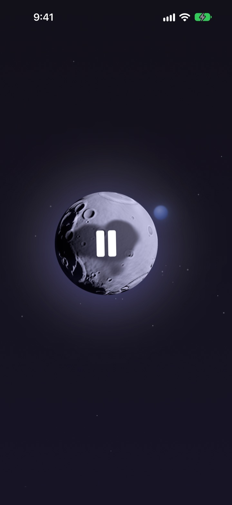
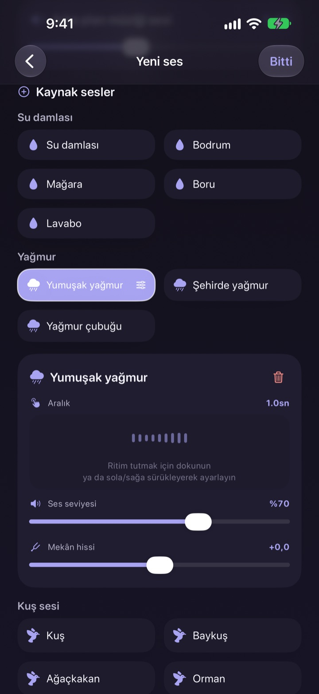
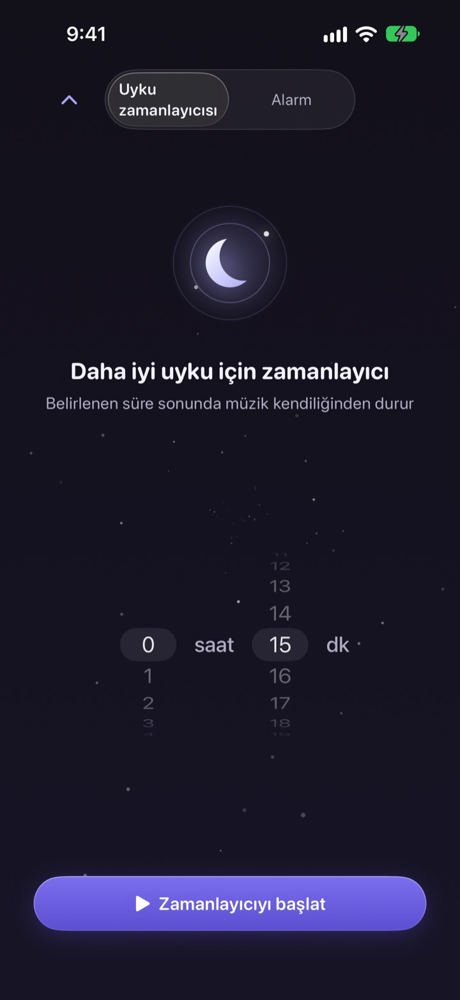
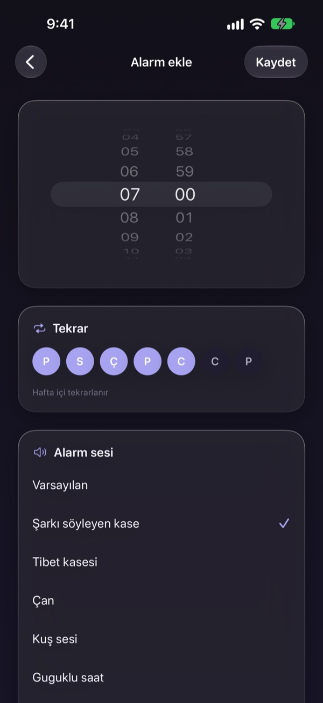
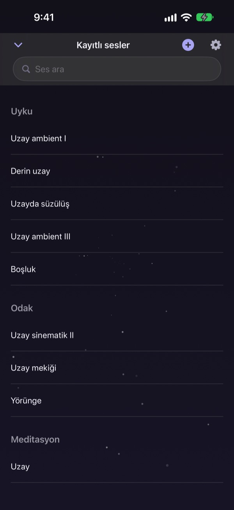

Geceni doğru sesi
aramakla geçirme
Yağmuru, su damlalarını ve şarkı söyleyen kâseyi bir kez üst üste koyup kendi sesini yap. Ertesi geceden itibaren aya bir dokunuş yeter.
Tüm sesleri ücretsiz dinleyebilirsin. iPhone ve iPad için.

Uyumadan önce ses seçmekle bir saatin geçtiği oldu mu?
Yağmur fazla tekdüze, dalgalar fazla gürültülü, açtığın video da gecenin ortasında reklama giriyor. Dalbit’te sevdiğin sesleri tam sana uyana kadar kendin üst üste koyar, hepsini tek bir ayın arkasında saklarsın.
Sesini katman katman kur
Yağmur, su damlaları, kuş sesleri ve şarkı söyleyen kâseleri üst üste koy. Her katmanın ses düzeyini, ne sıklıkla çaldığını ve nereden duyulduğunu ayarla; altına arka plan müziği olarak dalga ya da piyano ekle.
Karışıma bir ad ver, kaydet ve istediğin gece yeniden aç.

Seni uyandırmadan söner
Uyku zamanlayıcısı sesi asla birden kesmez. Yavaş yavaş kısar, böylece bitiş anı seni uyandırmaz.
Ekran kapalıyken ya da başka bir uygulamadayken ses çalmaya devam eder; hiçbir şeye dokunmazsan ekran kendiliğinden kararır.

Sabahları yumuşak bir uyanış
Şarkı söyleyen kâse, Tibet kâsesi, kuş sesleri ya da guguk kuşuyla alarm kur ve seçtiğin günlerde tekrarla.

Her şey tek bir ayda
Çalmak için aya dokun, duraklatmak için yine dokun. Başka ses için yana, uyku zamanlayıcısı için yukarı, kaydettiğin sesler için aşağı kaydır.
Bir ses içine sinerse aya basılı tutarak favorilerine ekle.

Üç adımda başla
- 1
Aya dokun
Uygulamayı aç, aya dokun; ses hemen başlar.
- 2
Yana kaydır
Hoşuna giden sesi bulana kadar kaydır.
- 3
Zamanlayıcıyı kur ve uzan
Yukarı kaydır, süreyi seç; ardından ses yavaşça kaybolur.
Ay neler yapar
- Dokun
- çal, duraklat
- Yana kaydır
- sonraki ses
- Yukarı kaydır
- uyku zamanlayıcısı ve alarmlar
- Aşağı kaydır
- kaydedilen sesler
- Basılı tut
- favorilere ekle
Kilitli ekrandaki oynatma denetimlerinden de duraklatıp devam ettirebilirsin.
Dinlemek ücretsiz. Daha fazlasını yapmak için Premium.
Ücretsiz
- Tüm sesler
- Sesleri katmanlayıp kendi karışımını yapma
- En fazla üç karışım kaydetme
- Yavaşça sönen uyku zamanlayıcısı
- Yumuşak sesli alarmlar
- Favoriler
Dalbit Premium
- İstediğin kadar karışım yap ve kaydet
Ücretsiz deneme süreli, otomatik yenilenen aylık abonelik
Abonelik, mevcut dönemin bitiminden en az 24 saat önce iptal edilmezse otomatik olarak yenilenir ve ücretsiz deneme bittiğinde ücretlendirilir. Apple’ın standart kullanım koşulları (EULA) geçerlidir.
Sık sorulan sorular
Sesleri nasıl çalıp değiştiririm?
Çalmak için ana ekrandaki aya dokun, durdurmak için yine dokun. Başka ses için yana, uyku zamanlayıcısı için yukarı, kitaplığın için aşağı kaydır.
Ekran kapanınca ses durur mu?
Hayır. Ekran kapalıyken ya da başka bir uygulamaya geçtiğinde de çalmaya devam eder. Durdurmak için aya yeniden dokun ya da kilitli ekrandaki denetimleri kullan.
Uyku zamanlayıcısı bitince ne olur?
Ses birden kesilmez; yavaş yavaş azalır ve sonra durur, böylece uyanmazsın.
Alarmım çalmıyor.
İlk alarmı oluştururken uygulama alarm izni ister. Ayarlar > Dalbit bölümünde iznin açık olduğundan emin ol.
Karışımlarım nereye kaydediliyor?
Karışımların, alarmların ve ayarların yalnızca bu cihazda durur. Uygulamayı silersen onlar da silinir.
Ücretsiz olarak neleri kullanabilirim?
Tüm sesleri, katmanlamayı ve en fazla üç kendi karışımını. Uyku zamanlayıcısı ve alarmlar da ücretsiz. Premium, karışım sayısındaki sınırı kaldırır.
Aboneliğimi nasıl iptal ederim?
Ayarlar > Apple Hesabı > Abonelikler’e git, Dalbit’i seç ve iptal et. Mevcut dönemin bitiminden en az 24 saat önce iptal etmezsen otomatik olarak yenilenir.
Telefon değiştirdim, aboneliğim gitti.
Aynı Apple Hesabı ile giriş yap, Dalbit’te abonelik ekranını aç ve Satın Alımları Geri Yükle’ye dokun.
Hata bildirmek ya da özellik önermek istiyorum.
Uygulamanın ayarlarından geri bildirim gönder ya da aşağıdaki adrese e-posta at. Genellikle birkaç gün içinde yanıt veririz.
Soruların ya da fikirlerin mi var? mizzking75@gmail.com adresine yaz.